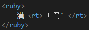

This element defines a ruby annotation
A ruby annotation is a small piece of text that indicates the pronunciation or meaning of the corresponding characters.
Use ruby together with rt and rp. The ruby element consists of one or more characters that needs explaining, rt gives the information, and the rp element defines what to show for browsers that do not support ruby annotations.
This element is used typically for japanese annotations and publications.
This is how its coded:
None
The global attributes are supported. Global
The event atttributes are suported. Event Attributes